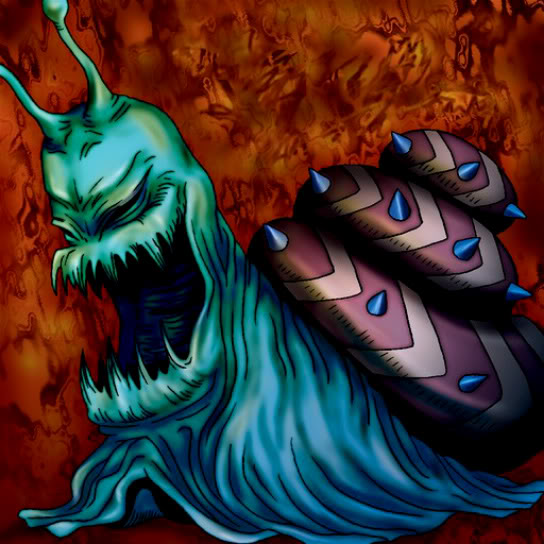

Bolt Escargot

STATS
ATK: 1400
DEF: 1500DECK COST
Deck Cost per Card: 29Fusion List (18 Possible Fusions)
- Bolt Escargot + Crawling Dragon #2 = Twin-Headed Thunder Dragon
- Bolt Escargot + Crawling Dragon = Twin-Headed Thunder Dragon
- Bolt Escargot + Curse of Dragon = Twin-Headed Thunder Dragon
- Bolt Escargot + Dragon Zombie = Twin-Headed Thunder Dragon
- Bolt Escargot + Gaia the Dragon Champion = Twin-Headed Thunder Dragon
- Bolt Escargot + Harpie's Pet Dragon = Twin-Headed Thunder Dragon
- Bolt Escargot + Kairyu-Shin = Twin-Headed Thunder Dragon
- Bolt Escargot + Kaiser Dragon = Twin-Headed Thunder Dragon
- Bolt Escargot + Meteor Dragon = Twin-Headed Thunder Dragon
- Bolt Escargot + Parrot Dragon = Twin-Headed Thunder Dragon
- Bolt Escargot + Red-Eyes B. Dragon = Twin-Headed Thunder Dragon
- Bolt Escargot + Sea King Dragon = Twin-Headed Thunder Dragon
- Bolt Escargot + Sectarian of Secrets = The Immortal of Thunder
- Bolt Escargot + Seiyaryu = Twin-Headed Thunder Dragon
- Bolt Escargot + Sky Dragon = Twin-Headed Thunder Dragon
- Bolt Escargot + Stone D. = Twin-Headed Thunder Dragon
- Bolt Escargot + Thousand Dragon = Twin-Headed Thunder Dragon
- Bolt Escargot + Thunder Dragon = Twin-Headed Thunder Dragon